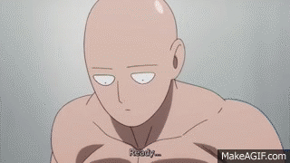
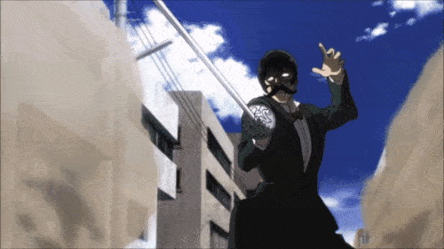
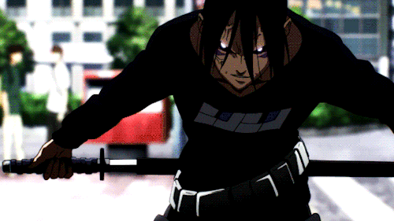
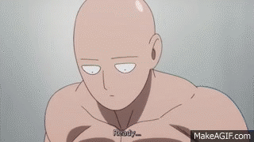
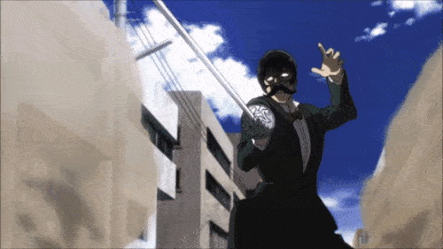
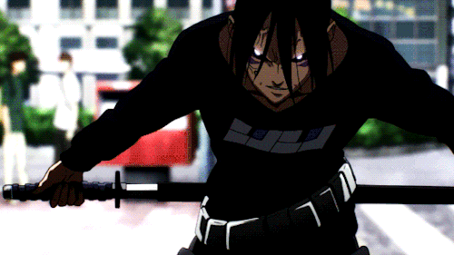
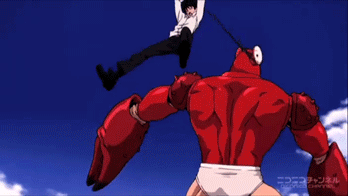
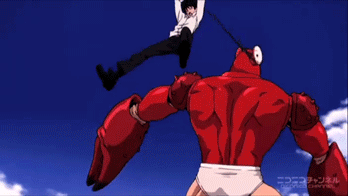

 

*Keep in mind that these arcs are only for the first season of the anime*
This arc introduces the character Saitama, how he got his strength,
a disciple named Genos.
*These are the chapters of the arc*
During this arc Saitama fights mosquito girl, which he kills right away.
He later encounters animals and insects that can talk and fight. They were made by a scientist named Carnage Kabuto.
He then fights against Kabuto who transformed himself into a monster.
*These are the chapters of the arc*
This arc is about a group of bald guys that hate working and stole armored body suits
that gave them a lot of strength. We meet two new villains in this arc, Speed O Sonic
revenge against Saitama in te future
*These are the chapters of the arc*
Saitama in this arc, along with Genos, goes into the Hero Organization to take two tests
in order to qualify as working heroes in society. Saitama gets a perfect score on Physical test
at the S-class, the highest class and Saitama at C-class, the 4th highest class.
*These are the chapters of the arc*
During this arc, Z-city is being investigated. All the cities are named from A-Z. We meet 2
A-class heroes, Spring Mustachio and Golden Ball. They come across a monster that has a bunch of seaweed
*These are the chapters of the arc*
In this arc a gigantic meteor is heading for Z-city! This could possibly wipe out humanity if it
hits the earth. Genos and Saitama are the only ones who get in between Z-city and the meteor. At first
jumps towards the meteor and punching it, shattering the entire meteor in one punch. Although he prevented
*These are the chapters of the arc*
In this arc these creatures who call themselves the "Seafolk" have come to the surface to take over the
Earth. An A-class hero, named Stinger, comes and defeats all of the Seafolk, but is then taken down by the Seafolk king.
Puri Puri Prisoner and Genos! Saitama sees his apprentice on the verge of dying and gets really mad.
*These are the chapters of the arc*
In this arc Aliens were forseen to invade the Earth, but oracle doesn't know when they will come
It could happen today, tomrrow, next week, in a month, a year, etc. In order to prepare for this invasion
even though he is a C-class. As they were having the meeting the Aliens coincidently started to invade Earth
Saitama comes face to face with the leader of the Aliens, Boros! For the very first time, Boros is the only
*These are the chapters of the arc*